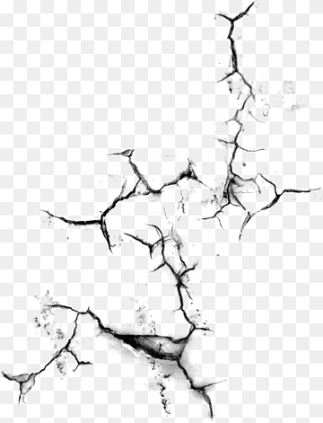

Formato jpg
JPG (también llamado JPEG) es un formato de archivo de imagen fotográfica muy popular en el entorno digital. El significado de las siglas JPG es Joint Photographic Experts Group, un equipo de expertos que inventó este formato en 1992 con el objetivo de crear un formato comprimido de imagen para fotografías.

Formato PNG
PNG es un formato gráfico basado en un algoritmo de compresión sin pérdida para bitmaps no sujeto a patentes.

Formato gif
Un GIF (Graphics Interchange Format) es un archivo de imagen que se anima mediante la combinación de varias imágenes o un solo vídeo. Los archivos GIFs suelen usar un algoritmo de comprensión que se denomina codificación LZW que favorece la no degradación y pérdida de calidad de la imagen.

Formato webp
WebP es un formato gráfico en forma de contenedor, que sustenta tanto compresión con pérdida como sin ella. Lo está desarrollando Google, basándose en tecnología adquirida con la compra de On2 Technologies.

Formato svg
El SVG es usado para crear íconos para sitios web. La imagen se estira y se comprime sin perder la calidad de la imagen y tampoco se ve borrosa en dispositivos con alta densidad de pixeles.